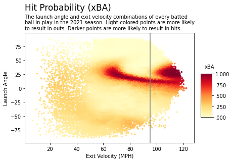
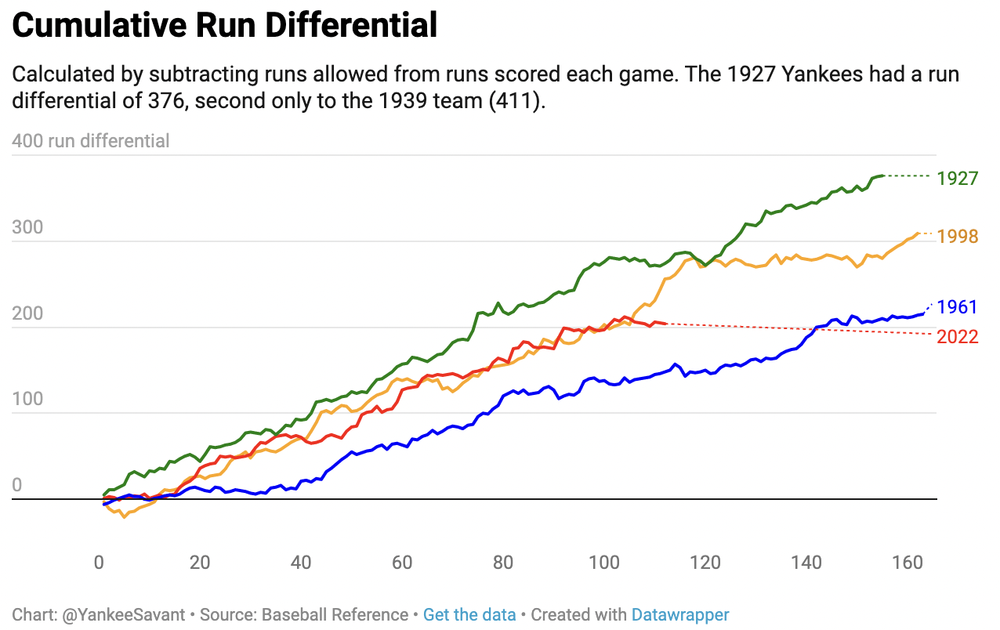
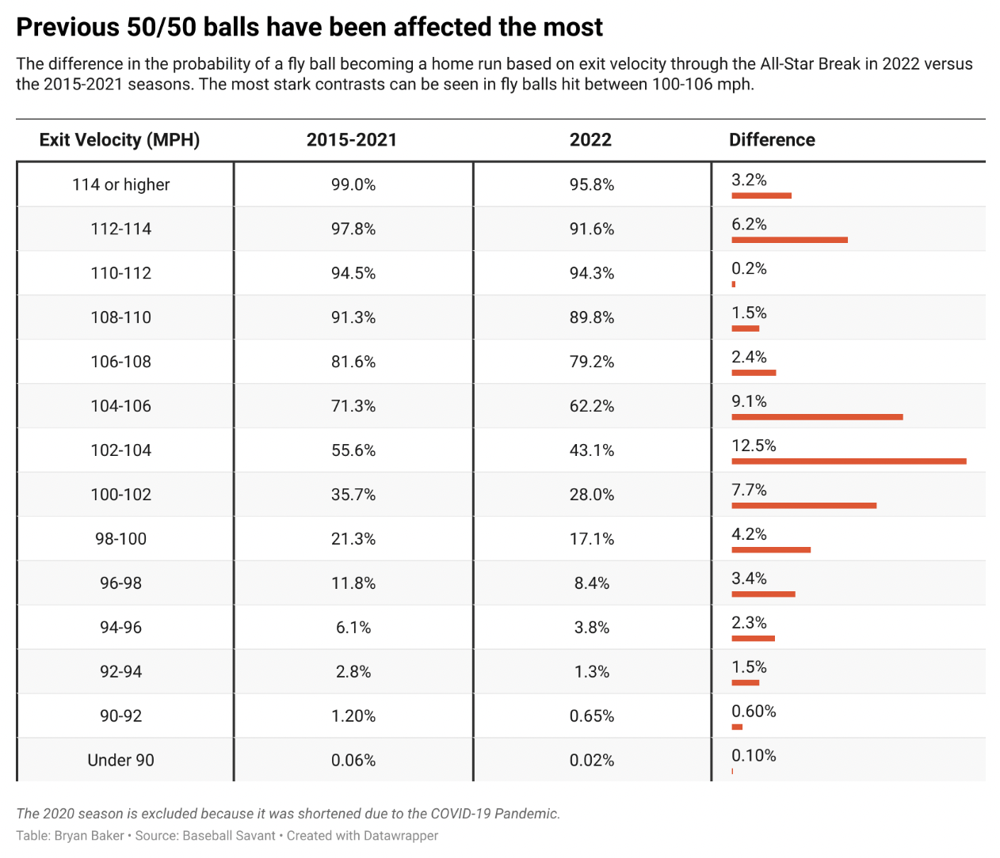
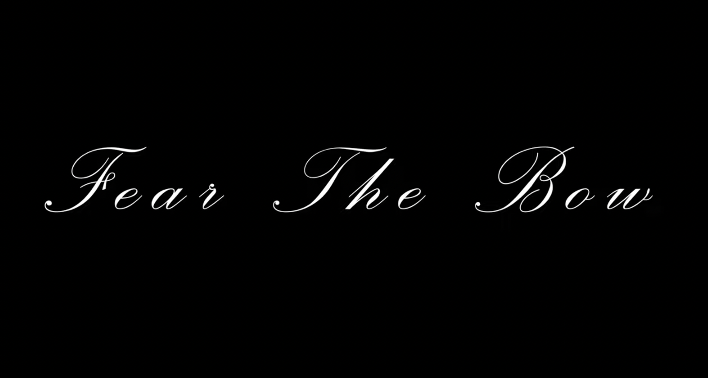
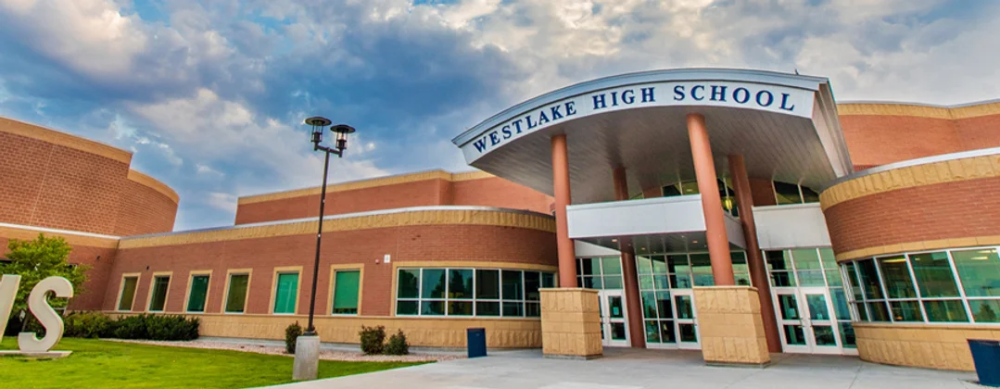

Bryan Baker
I studied journalism and sports media at the University of Texas at Austin.
I learned coding and data visualization at Columbia Journalism School's Lede Program in 2022.
I write, code, design and create content for social media.
-

MLB: The Importance of Exit Velocity and Batted Ball Data
Tools: Python, Excel, Datawrapper, Canva
Sep. 1, 2022
-

How Do the 2022 Yankees Stack Up Against Other Legendary Teams from the Past?
Tools: Python, Selenium, Github Actions, Datawrapper
August 12, 2022
-

MLB's New Ball Has Negatively Affected the Home Run Rate
Tools: Python, Pybaseball, Datawrapper, Adobe Illustrator
July 20, 2022
-

Fear The Bow: Bella Vargas Sports Documentary
Tools: Adobe Premiere Pro
May 24, 2022
-

Community Concerns Surrounding Westlake's New Diversity Initiative
November 2, 2021